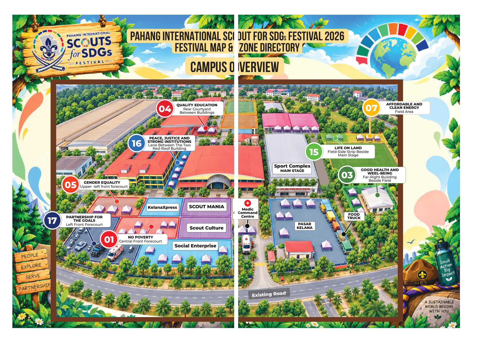

Peta lokasi festival
Tukar antara peta satelit dan peta ilustrasi asal. Pilih pin pada peta ilustrasi atau cari SDG melalui direktori.
Nota ketepatan: Imej satelit ini ialah tangkapan kawasan kampus UMPSA yang dibekalkan sebelum ini. Ia digunakan untuk orientasi visual. Dokumen peta program menunjukkan The East / Tasik Paya Besar dan Paya Besar Industrial Park sebagai kawasan berasingan di luar bingkai imej ini. Oleh itu, tiada pin SDG direka atau diletakkan pada imej satelit. Gunakan peta ilustrasi asal untuk pin lokasi program.

Pin bernombor ialah kawasan klik yang diletakkan pada penanda SDG yang tercetak dalam peta asal. Kedudukan pin ini mengikuti ilustrasi program, bukan koordinat GPS.
Terus ke SDG
Pilih mana-mana matlamat untuk melihat kawasan dan membuka PDF.
Pin interaktif SDG 04
SDG 04 · Quality Education
Rear Courtyard Between Buildings — penanda SDG 04 pada peta Court Frontage, halaman 3 PDF asal.
Direktori 17 SDG
Lokasi mengikut label dan keterangan dalam PDF peta program.
Dokumen panduan SDG
17 fail PDF berasingan untuk rujukan guru.